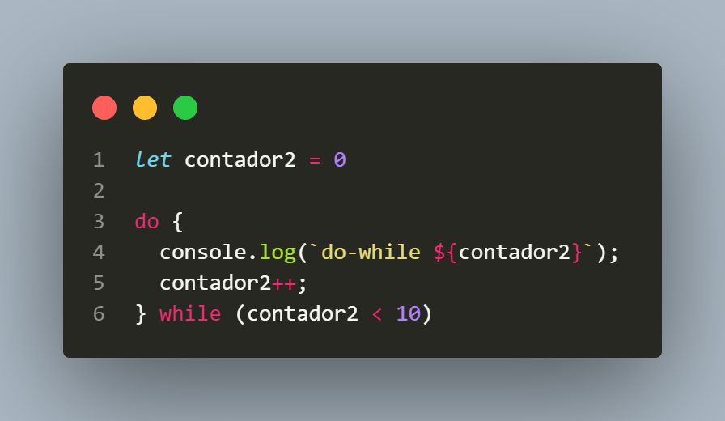

Tambien llamados ciclos o bucles estos permiten automatizar tareas repetitivas, ejecutando un bloque de código hasta que se cumpla o deje de cumplirse una condición.
Una iteración es una vuelta completa de un bucle. Cada vez que el bucle ejecuta su bloque de código y luego vuelve
a
verificar la condición, se completa una iteración.
En un ciclo como for, while, o do-while, cada
ejecución
del
bloque de código dentro del bucle se denomina iteración.
La estructura de control while se utiliza para ejecutar repetidamente un bloque de código mientras una condición específica sea verdadera. El bucle while continúa repitiendo el código hasta que la condición evaluada sea falsa.
El bucle do-while es similar al bucle while, pero con una diferencia importante: siempre ejecuta el bloque de código al menos una vez, ya que la condición se evalúa después de ejecutar el bloque, no antes.
El bucle for es otra estructura de control que se utiliza para ejecutar repetidamente un bloque de código. Es especialmente útil cuando se sabe de antemano cuántas veces debe repetirse el ciclo, ya que permite definir en una sola línea la inicialización, condición, y el incremento/decremento de una variable de control. (osea tiene todo lo que necesita un bucle while o do-while pero en un sola instrucción)
// se mostrara en pantalla cada valor del arreglo a partir del valor de la variable. (por lo que terminara
dandonos
todos los valores del arreglo)
.length te dice cuántos elementos hay en un arreglo o cuántos caracteres hay en una cadena de
texto.
El ciclo for...in se utiliza para recorrer todas las propiedades de un objeto. Cada propiedad de un objeto tiene dos cosas: una clave (también llamada "nombre de la propiedad") y un valor.
Un objeto literal en JavaScript es una forma de definir un objeto utilizando una sintaxis concisa dentro de llaves {}. Los objetos literales son una de las formas más comunes de crear objetos en JavaScript y se utilizan para almacenar datos y funciones
Imagina que tienes un objeto llamado persona, con varias propiedades (claves y valores):
La primera propiedad se llama "nombre" es el mismo que el de la clave solo que tambien es llamado asi para
identificarlo y el valor de la clave es "Carlos"
"propiedad" Es una variable temporal que se crea dentro del ciclo. En cada "vuelta" (iteración) del ciclo, esta variable tomará el valor de una clave del objeto. En este ejemplo:
El ciclo for...of es una estructura de control que se utiliza para recorrer los valores de objetos iterables, como los arreglos (arrays), cadenas de texto (strings), mapas (maps), conjuntos (sets), entre otros.
En JavaScript, un objeto iterable es cualquier objeto que tiene un método especial llamado [Symbol.iterator].
Este
método permite a los objetos ser recorridos en un bucle for...of. La mayoría de los tipos de datos que usamos para
almacenar colecciones de elementos (como arreglos y conjuntos) son iterables.
Los objetos literales normales en JavaScript, como los que creas con llaves {}, no son iterables por defecto y no
se
pueden recorrer directamente con un bucle for...of.